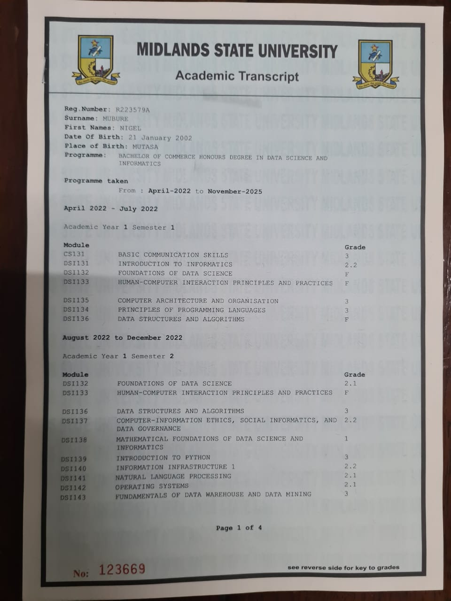
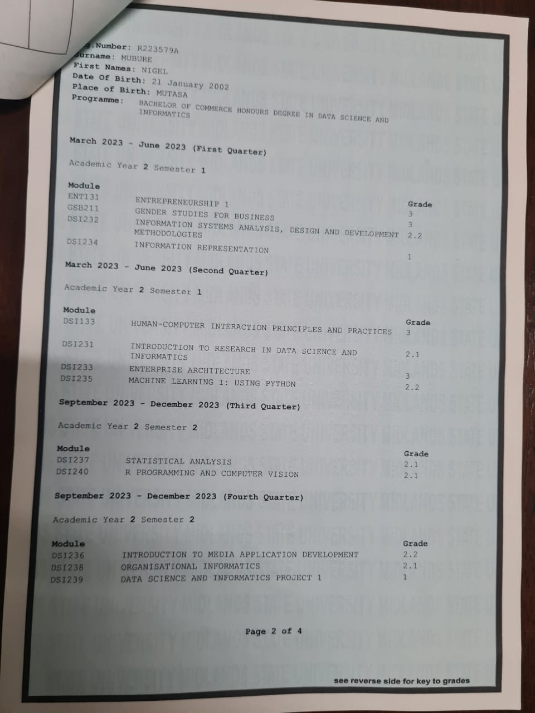
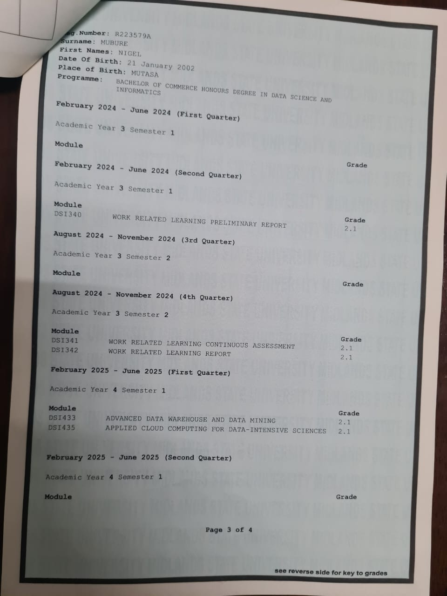
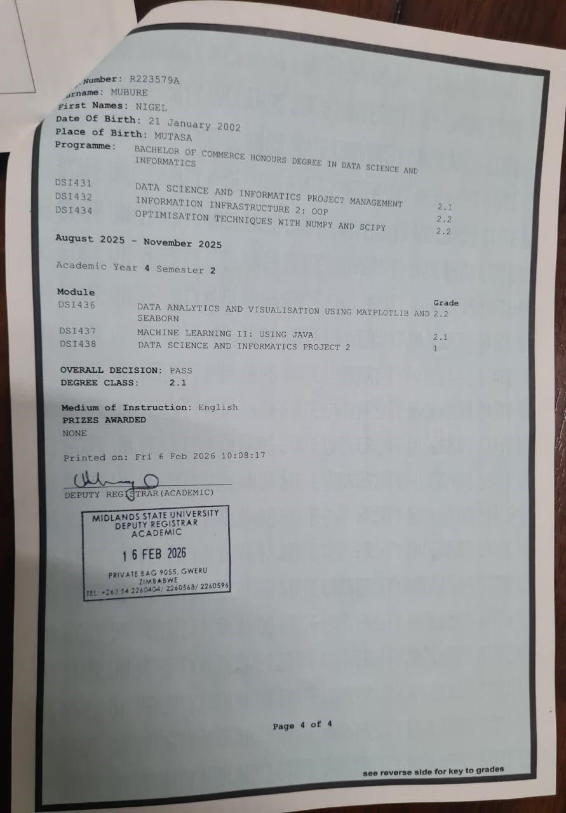
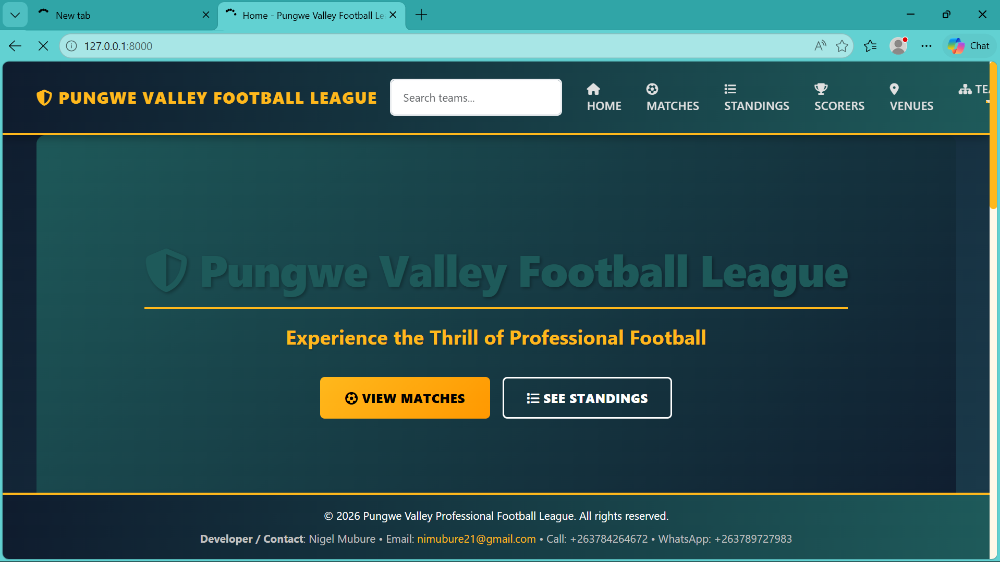
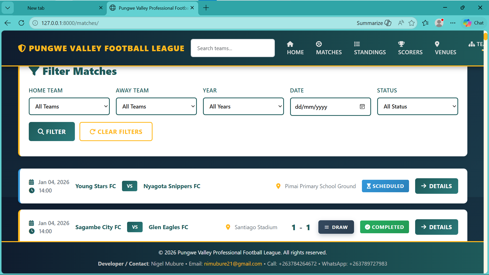
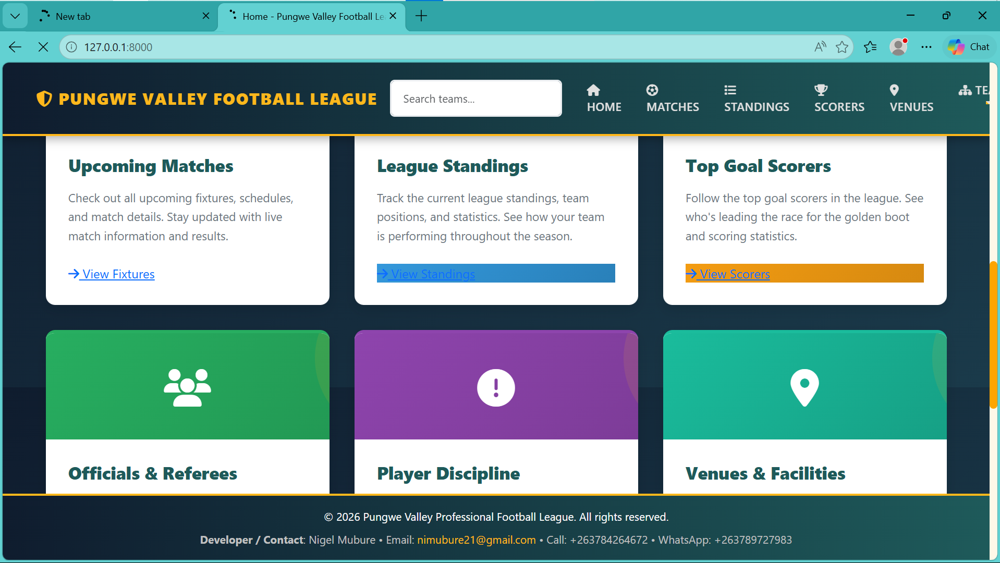
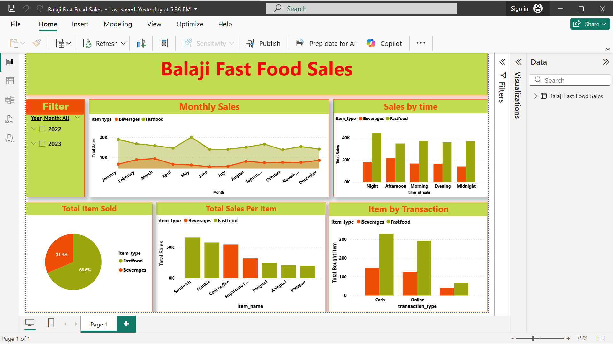

Nigel Mubure
Data Science | Analytics | BI
Data Science | Analytics | BI
Passionate Data Science professional specializing in Data Analytics, Machine Learning, Business Intelligence & Systems Design.
I am a passionate Data Science graduate with strong interests in applying data analytics, system design, and machine learning to solve real-world problems. I enjoy working with diverse datasets, building analytical models, and developing data-driven systems that support informed decision-making.
During my year-long industrial attachment (2024) at the City of Mutare's GIS Department, I applied data science to municipal challenges, transforming operational workflows and enhancing data-driven decision-making across the organization.
Midlands State University, Gweru, Zimbabwe | 2022-2025
Degree Class: 2.1 (Upper Second Class)
Pure Mathematics, Business Studies, Accounting




Mobile browsers often do not display embedded PDFs inside the page, so this opens directly in a new tab or downloads automatically.
Open / Download Transcript PDFA full-stack web-based Management Information System (MIS) designed to support grassroots football administration in Honde Valley, Zimbabwe. The system improves transparency, integrity, and accessibility of league information by digitizing fixtures, results, standings, and team data in line with ZIFA’s grassroots football development vision.
This solution operates as a grassroots football MIS, emphasizing system design, data flows, and process standardization at community level. It models core football operations fixtures, results, standings, and administration into a centralized system, improving data integrity, traceability, and reporting.
Objectives:
Key Features:
Tools & Technologies:
Experience & Skills Gained:
Impact: This project demonstrates how technology can strengthen grassroots football governance, enhance visibility of rural leagues such as Honde Valley, and contribute to transparent football development across Zimbabwe.



AgriAssistant is an AI-powered agricultural support system designed to assist farmers in making data-driven decisions. It integrates land suitability analysis, crop yield forecasting, plant disease detection, interactive data visualization, and an intelligent chatbot to provide comprehensive support for sustainable farming.
Objectives:
Skills Gained:


This Data App project is a comprehensive web-based Billing Analytics Dashboard designed to revolutionize how the City of Mutare analyzes and visualizes billing-related data across all services, including rates, sewer, water, street lights, and more. It aims to centralize data, improve reporting, and standardize KPIs for better decision-making.
Motivation: The current reliance on fragmented Excel sheets for multiple suburbs leads to risks of data loss, errors, and inefficiencies. This dashboard helps streamline analysis, enhance data security, and support strategic planning.


Professional Power BI dashboards showcasing analytics expertise across business and public health domains.
Objective: To analyze pizza sales performance, identify top-selling products, and understand customer purchasing trends to optimize menu offerings and marketing strategies.
Observation: Classic pizzas lead slightly in revenue share (26.9%), but Veggie pizzas are close behind (25.46%), suggesting balanced customer preferences. “The Classic Del” is the clear bestseller, while niche pizzas like “Brie Carre” sell fewer units. Insights suggest focusing marketing on hero products, reconsidering low-demand sizes, and improving color consistency across charts.
Revenue by Size (Bar Chart): Large (L) pizzas generate the highest revenue, followed by Medium (M). XXL and XL contribute very little, which could indicate low demand or pricing issues. Observation: This suggests customers prefer standard sizes over extremes — useful for inventory and pricing strategy.
Orders by Category (Bar Chart): Classic pizzas have the highest total orders, aligning with their revenue share. Chicken and Supreme categories are close, while Veggie lags slightly in orders despite strong revenue — possibly higher price per unit. Observation: Veggie pizzas may have fewer orders but higher margins.
Project Overview: This project is an interactive Power BI dashboard designed to analyze and visualize sexually transmitted infection (STI) data across multiple institutions. The dashboard presents key health indicators such as STI status distribution, treatment types received, condom usage, and STI symptoms by infection type. It supports data-driven public health decision-making by revealing trends, risks, and treatment effectiveness.
Status by STI Type (Bar Chart): HIV shows the highest positive (+VE) cases compared to other STIs. Chlamydia and Gonorrhea also have notable positive counts, while HPV and Syphilis appear lower. Observation: HIV remains the most critical focus area, but bacterial STIs (Chlamydia, Gonorrhea) are also significant.
Treatment Received (Bar Chart by Gender): Antibiotics dominate treatment, especially for males. Females show higher use of topical creams and antifungals compared to males. Observation: Treatment distribution reflects the nature of infections (bacterial vs fungal/viral) and possibly gender-specific health-seeking behavior.
General Observation: Condom usage is nearly balanced (51.6% Yes vs 48.4% No), highlighting risk exposure. Symptom overlap (discharge, painful urination, fatigue) complicates diagnosis, reinforcing the importance of testing. The dashboard emphasizes urgent needs for awareness, prevention, and accessible treatment programs.
Objective: To monitor fast food chain performance, compare branch-level sales, and evaluate the impact of pricing and promotions on customer engagement.
Observation: Fast food dominates sales (68.6%) compared to beverages (31.4%). Afternoon and Evening are the strongest sales periods for both fast food and beverages, while Midnight and Night sales are minimal, suggesting limited late-night demand. Staffing and inventory can be optimized around Afternoon/Evening peaks. Sandwiches and Frankies lead fast food sales, while Cold Coffee and Sugarcane Juice top beverages. Online transactions are stronger for beverages, while cash dominates fast food purchases. Insights suggest focusing promotions on hero items, optimizing staffing during peak hours, and leveraging online beverage sales.



Full-stack Android application and platform connecting clients to beauty service providers for instant bookings, payments, and product sales.
| Gap | Impact |
|---|---|
| No shareable public web link for services/stylists | Zero organic social growth — no WhatsApp sharing |
| No marketplace for physical products | Cannot sell haircare, skincare, tools, gifts |
| No gifting or gift card feature | Missing major purchase occasions |
| No service categories or tags | Clients cannot filter by Hair, Nails, Lashes etc. |
| No stylist portfolio or photo gallery | Cannot see stylist's actual work before booking |
| No availability schedule | Booking conflicts, user friction |
| No saved/favourite stylists | No way to save preferred providers |
| No loyalty or referral programme | No incentive to return or invite friends |
| No "near me" map discovery | Location discovery not surfaced |
| No before-and-after result sharing | No viral content loop |
| No deep linking | Shared links can't open directly inside the app |